Chapter 27: The Reproductive System¶
Introduction¶
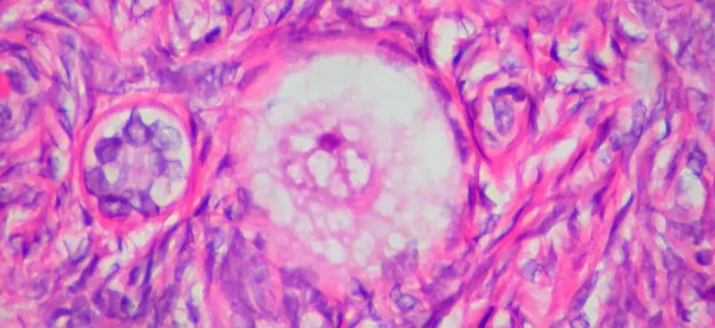
Chapter Outline: Chapter Objectives
After studying this chapter, you will be able to:
- Describe the anatomy of the reproductive systems, including their accessory structures
- Explain the role of hypothalamic and pituitary hormones in reproductive function
- Trace the path of a sperm cell from its initial production through fertilization of an oocyte
- Explain the events in the ovary prior to ovulation
- Describe the development and maturation of the sex organs and the emergence of secondary sex characteristics during puberty
Small, uncoordinated, and slick with amniotic fluid, a newborn encounters the world outside of the womb. We do not often consider that a child’s birth is proof of the healthy functioning of reproductive systems. Moreover, endocrine systems had to secrete the appropriate regulating hormones to induce the production and release of unique male and female gametes, reproductive cells containing genetic material (one set of 23 chromosomes). Reproductive behavior or medical innovation had to facilitate the transfer of male gametes—the sperm—to the female gamete, an oocyte (egg). Finally, combination of the gametes (fertilization) had to occur, followed by implantation and development. In this chapter, you will explore the reproductive systems, whose functioning can culminate in the powerful sound of a newborn’s first cry.
27.1 Anatomy and Physiology of the Testicular Reproductive System¶
Learning Objectives
By the end of this section, you will be able to:
- Describe the structure and function of the organs of the testicular reproductive system
- Describe the structure and function of the sperm cell
- Explain the events during spermatogenesis that produce haploid sperm from diploid cells
- Identify the importance of testosterone in reproductive function
People often use the words "female" and "male" to describe two different concepts: our sense of gender identity, and our biological sex as determined by our X/Y chromosomes, hormones, sex organs, and other physical characteristics. For some people, gender identity is different from biological sex or their sex assigned at birth. In this chapter and the next chapter, "female" and "male" refer to sex only, and the typical reproductive anatomy of XX and XY individuals is discussed.
Unique for its role in reproduction, a gamete is a specialized sex cell, which in humans carries 23 chromosomes—one half the number in body cells. In almost all sexually reproducing species, these two haploid cells differ in size; the smaller gamete is called the male gamete and the larger one is called the female gamete. At fertilization, the chromosomes in one male gamete, called a sperm (or spermatozoon), combine with the chromosomes in one female gamete, called an ovum. The function of the male, or testicular, reproductive system (Figure 27.2) is to produce sperm and transfer them to the female reproductive tract. The paired testes are a crucial component in this process, as they produce both sperm and androgens, the hormones that support male reproductive physiology. In male humans, the most important androgen is testosterone. For people with a penis, several accessory organs and ducts aid the process of sperm maturation and transport the sperm and other seminal components to the penis, which may deliver sperm to the female reproductive tract. In this section, we examine each of these different structures, and discuss the process of sperm production and transport.
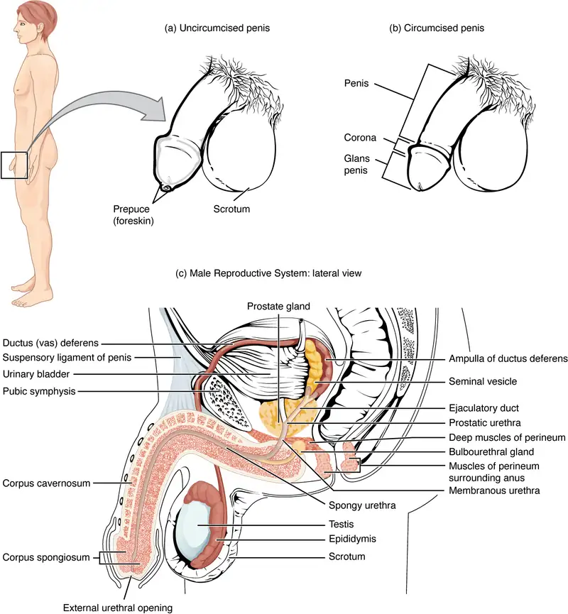
Scrotum¶
The testes are located in a skin-covered, highly pigmented, muscular sack called the scrotum that extends from the body behind the penis (see Figure 27.2). This location is important in sperm production, which occurs within the testes, and proceeds more efficiently when the testes are kept 2 to 4°C below core body temperature.
The dartos muscle makes up the subcutaneous muscle layer of the scrotum (Figure 27.3). It continues internally to make up the scrotal septum, a wall that divides the scrotum into two compartments, each housing one testis. Descending from the internal oblique muscle of the abdominal wall are the two cremaster muscles, which cover each testis like a muscular net. By contracting simultaneously, the dartos and cremaster muscles can elevate the testes in cold weather (or water), moving the testes closer to the body and decreasing the surface area of the scrotum to retain heat. Alternatively, as the environmental temperature increases, the scrotum relaxes, moving the testes farther from the body core and increasing scrotal surface area, which promotes heat loss. Externally, the scrotum has a raised medial thickening on the surface called the raphae.
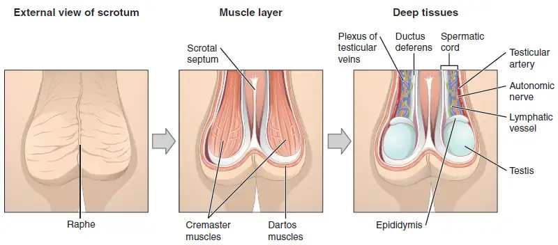
Testes¶
The testes (singular = testis) are the male gonads—that is, the male reproductive organs. They produce both sperm and androgens, such as testosterone, and are active throughout the reproductive lifespan.
Paired ovals, adult testes are each approximately 4 to 5 cm in length and are housed within the scrotum (see Figure 27.3). They are surrounded by two distinct layers of protective connective tissue (Figure 27.4). The outer tunica vaginalis is a serous membrane that has both a parietal and a thin visceral layer. Beneath the tunica vaginalis is the tunica albuginea, a tough, white, dense connective tissue layer covering the testis itself. Not only does the tunica albuginea cover the outside of the testis, it also invaginates to form septa that divide the testis into 300 to 400 structures called lobules. Within the lobules, sperm develop in structures called seminiferous tubules. During the seventh month of the developmental period of a male fetus, each testis moves through the abdominal musculature to descend into the scrotal cavity. This is called the “descent of the testis.” Cryptorchidism is the clinical term used when one or both of the testes fail to descend into the scrotum prior to birth.
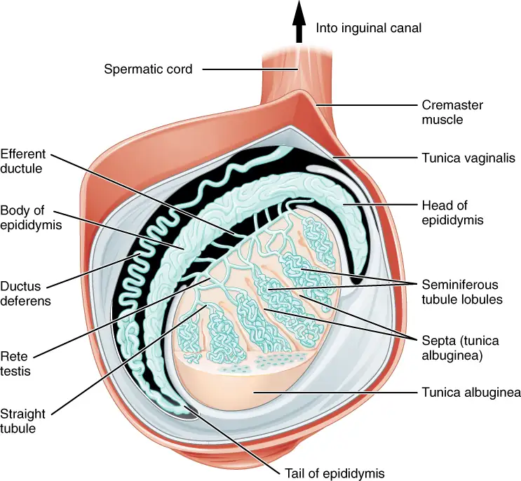
The tightly coiled seminiferous tubules form the bulk of each testis. They are composed of developing sperm cells surrounding a lumen, the hollow center of the tubule, where formed sperm are released into the duct system of the testis. Specifically, from the lumens of the seminiferous tubules, sperm move into the straight tubules (or tubuli recti), and from there into a fine meshwork of tubules called the rete testes. Sperm leave the rete testes, and the testis itself, through the 15 to 20 efferent ductules that cross the tunica albuginea.
Inside the seminiferous tubules are six different cell types. These include supporting cells called sustentacular cells, as well as five types of developing sperm cells called germ cells. Germ cell development progresses from the basement membrane—at the perimeter of the tubule—toward the lumen. Let’s look more closely at these cell types.
Sertoli Cells¶
Surrounding all stages of the developing sperm cells are elongate, branching Sertoli cells. Sertoli cells are a type of supporting cell called a sustentacular cell, or sustentocyte, that are typically found in epithelial tissue. Sertoli cells secrete signaling molecules that promote sperm production and can control whether germ cells live or die. They extend physically around the germ cells from the peripheral basement membrane of the seminiferous tubules to the lumen. Tight junctions between these sustentacular cells create the blood–testis barrier, which keeps bloodborne substances from reaching the germ cells and, at the same time, keeps surface antigens on developing germ cells from escaping into the bloodstream and prompting an autoimmune response.
Germ Cells¶
The least mature cells, the spermatogonia (singular = spermatogonium), line the basement membrane inside the tubule. Spermatogonia are the stem cells of the testis, which means that they are still able to differentiate into a variety of different cell types throughout adulthood. Spermatogonia divide to produce primary and secondary spermatocytes, then spermatids, which finally produce formed sperm. The process that begins with spermatogonia and concludes with the production of sperm is called spermatogenesis.
Spermatogenesis¶
As just noted, spermatogenesis occurs in the seminiferous tubules that form the bulk of each testis (see Figure 27.4). The process begins at puberty, after which time sperm are produced constantly throughout a male's life. One production cycle, from spermatogonia through formed sperm, takes approximately 64 days. A new cycle starts approximately every 16 days, although this timing is not synchronous across the seminiferous tubules. Sperm counts—the total number of sperm a person produces—slowly decline after age 35, and some studies suggest that smoking can lower sperm counts irrespective of age.
The process of spermatogenesis begins with mitosis of the diploid spermatogonia (Figure 27.5). Because these cells are diploid (2n), they each have a complete copy of the person's genetic material, or 46 chromosomes. However, mature gametes are haploid (1n), containing 23 chromosomes—meaning that daughter cells of spermatogonia must undergo a second cellular division through the process of meiosis.
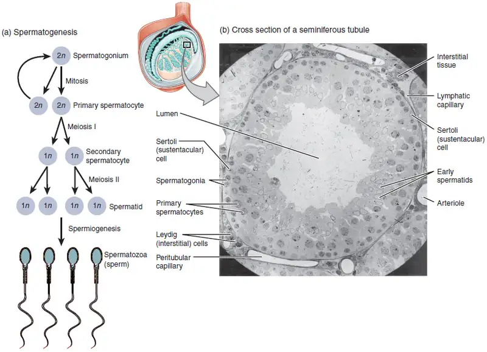
Two identical diploid cells result from spermatogonia mitosis. One of these cells remains a spermatogonium, and the other becomes a primary spermatocyte, the next stage in the process of spermatogenesis. As in mitosis, DNA is replicated in a primary spermatocyte, before it undergoes a cell division called meiosis I. During meiosis I each of the 23 pairs of chromosomes separates. This results in two cells, called secondary spermatocytes, each with only half the number of chromosomes. Now a second round of cell division (meiosis II) occurs in both of the secondary spermatocytes. During meiosis II each of the 23 replicated chromosomes divides, similar to what happens during mitosis. Thus, meiosis results in separating the chromosome pairs. This second meiotic division results in a total of four cells with only half of the number of chromosomes. Each of these new cells is a spermatid. Although haploid, early spermatids look very similar to cells in the earlier stages of spermatogenesis, with a round shape, central nucleus, and large amount of cytoplasm. A process called spermiogenesis transforms these early spermatids, reducing the cytoplasm, and beginning the formation of the parts of a true sperm. The fifth stage of germ cell formation—spermatozoa, or formed sperm—is the end result of this process, which occurs in the portion of the tubule nearest the lumen. Eventually, the sperm are released into the lumen and are moved along a series of ducts in the testis toward a structure called the epididymis for the next step of sperm maturation.
Structure of Formed Sperm¶
Sperm are smaller than most cells in the body; in fact, the volume of a sperm cell is 85,000 times less than that of the female gamete. Approximately 100 to 300 million sperm are produced each day, whereas females typically ovulate only one oocyte per month. As is true for most cells in the body, the structure of sperm cells speaks to their function. Sperm have a distinctive head, mid-piece, and tail region (Figure 27.6). The head of the sperm contains the extremely compact haploid nucleus with very little cytoplasm. These qualities contribute to the overall small size of the sperm (the head is only 5 μm long). A structure called the acrosome covers most of the head of the sperm cell as a “cap” that is filled with lysosomal enzymes important for preparing sperm to participate in fertilization. Tightly packed mitochondria fill the mid-piece of the sperm. ATP produced by these mitochondria will power the flagellum, which extends from the neck and the mid-piece through the tail of the sperm, enabling it to move the entire sperm cell. The central strand of the flagellum, the axial filament, is formed from one centriole inside the maturing sperm cell during the final stages of spermatogenesis.
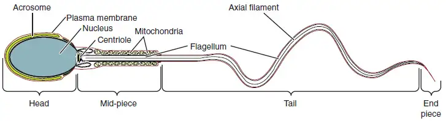
Sperm Transport¶
To fertilize an egg without medical intervention, sperm must be moved from the seminiferous tubules in the testes, through the epididymis, and—later during ejaculation—along the length of the penis and out into the female reproductive tract.
Role of the Epididymis¶
From the lumen of the seminiferous tubules, the immotile sperm are surrounded by testicular fluid and moved to the epididymis (plural = epididymides), a coiled tube attached to the testis where newly formed sperm continue to mature (see Figure 27.4). Though the epididymis does not take up much room in its tightly coiled state, it would be approximately 6 m (20 feet) long if straightened. It takes an average of 12 days for sperm to move through the coils of the epididymis, with the shortest recorded transit time in humans being one day. Sperm enter the head of the epididymis and are moved along predominantly by the contraction of smooth muscles lining the epididymal tubes. As they are moved along the length of the epididymis, the sperm further mature and acquire the ability to move under their own power. Once inside the female reproductive tract, they will use this ability to move independently toward the unfertilized egg. The more mature sperm are then stored in the tail of the epididymis (the final section) until ejaculation occurs.
Duct System¶
During ejaculation, sperm exit the tail of the epididymis and are pushed by smooth muscle contraction to the ductus deferens (also called the vas deferens). The ductus deferens is a thick, muscular tube that is bundled together inside the scrotum with connective tissue, blood vessels, and nerves into a structure called the spermatic cord (see Figure 27.2 and Figure 27.3). Because the ductus deferens is physically accessible within the scrotum, surgical sterilization to interrupt sperm delivery can be performed by cutting and sealing a small section of the ductus (vas) deferens. This procedure is called a vasectomy, and it is an effective form of birth control. Although it may be possible to reverse a vasectomy, clinicians consider the procedure permanent, and advise people to undergo it only if they are certain they no longer wish to have children.
Interactive Link Feature
Watch this video to learn about a vasectomy. As described in this video, a vasectomy is a procedure in which a small section of the ductus (vas) deferens is removed from the scrotum. This interrupts the path taken by sperm through the ductus deferens. If sperm do not exit through the vas, either because the person has had a vasectomy or has not ejaculated, in what region of the testis do they remain?
From each epididymis, each ductus deferens extends superiorly into the abdominal cavity through the inguinal canal in the abdominal wall. From here, the ductus deferens continues posteriorly to the pelvic cavity, ending posterior to the bladder where it dilates in a region called the ampulla (meaning “flask”).
Sperm make up only 5 percent of the final volume of semen, the thick, milky fluid that is ejaculated. The bulk of semen is produced by three critical accessory glands of the male reproductive system: the seminal vesicles, the prostate, and the bulbourethral glands.
Seminal Vesicles¶
As sperm pass through the ampulla of the ductus deferens at ejaculation, they mix with fluid from the associated seminal vesicle (see Figure 27.2). The paired seminal vesicles are glands that contribute approximately 60 percent of the semen volume. Seminal vesicle fluid contains large amounts of fructose, which is used by the sperm mitochondria to generate ATP to allow movement through the female reproductive tract.
The fluid, now containing both sperm and seminal vesicle secretions, next moves into the associated ejaculatory duct, a short structure formed from the ampulla of the ductus deferens and the duct of the seminal vesicle. The paired ejaculatory ducts transport the seminal fluid into the next structure, the prostate gland.
Prostate Gland¶
As shown in Figure 27.2, the centrally located prostate gland sits anterior to the rectum at the base of the bladder surrounding the prostatic urethra (the portion of the urethra that runs within the prostate). About the size of a walnut, the prostate is formed of both muscular and glandular tissues. It excretes an alkaline, milky fluid to the passing seminal fluid—now called semen—that is critical to first coagulate and then decoagulate the semen following ejaculation. The temporary thickening of semen helps retain it within the female reproductive tract, providing time for sperm to utilize the fructose provided by seminal vesicle secretions. When the semen regains its fluid state, sperm can then pass farther into the female reproductive tract.
The prostate normally doubles in size during puberty. At approximately age 25, it gradually begins to enlarge again. This enlargement does not usually cause problems; however, abnormal growth of the prostate, or benign prostatic hyperplasia (BPH), can cause constriction of the urethra as it passes through the middle of the prostate gland, leading to a number of lower urinary tract symptoms, such as a frequent and intense urge to urinate, a weak stream, and a sensation that the bladder has not emptied completely. By age 60, approximately 40 percent of males have some degree of BPH. By age 80, the number of affected individuals has jumped to as many as 80 percent. Treatments for BPH attempt to relieve the pressure on the urethra so that urine can flow more normally. Mild to moderate symptoms are treated with medication, whereas severe enlargement of the prostate is treated by surgery in which a portion of the prostate tissue is removed.
Another common disorder involving the prostate is prostate cancer. According to the Centers for Disease Control and Prevention (CDC), prostate cancer is the second most common cancer in males. However, some forms of prostate cancer grow very slowly and thus may not ever require treatment. Aggressive forms of prostate cancer, in contrast, involve metastasis to vulnerable organs like the lungs and brain. There is no link between BPH and prostate cancer, but the symptoms are similar. Prostate cancer is detected by a medical history, a blood test, and a rectal exam that allows physicians to palpate the prostate and check for unusual masses. If a mass is detected, the cancer diagnosis is confirmed by biopsy of the cells.
Bulbourethral Glands¶
The final addition to semen is made by two bulbourethral glands (or Cowper’s glands) that release a thick, salty fluid that lubricates the end of the urethra and the vagina, and helps to clean urine residues from the penile urethra. The fluid from these accessory glands is released after the male becomes sexually aroused, and shortly before the release of the semen. It is therefore sometimes called pre-ejaculate. It is important to note that, in addition to the lubricating proteins, it is possible for bulbourethral fluid to pick up sperm already present in the urethra, and therefore it may be able to cause pregnancy.
Interactive Link Feature
Watch this video to explore the structures of the male reproductive system and the path of sperm, which starts in the testes and ends as the sperm leave the penis through the urethra. Where are sperm deposited after they leave the ejaculatory duct?
The Penis¶
The penis is the male organ of copulation (sexual intercourse). It is flaccid for non-sexual actions, such as urination, and turgid and rod-like with sexual arousal. When erect, the stiffness of the organ allows it to penetrate into the vagina and deposit semen into the female reproductive tract.
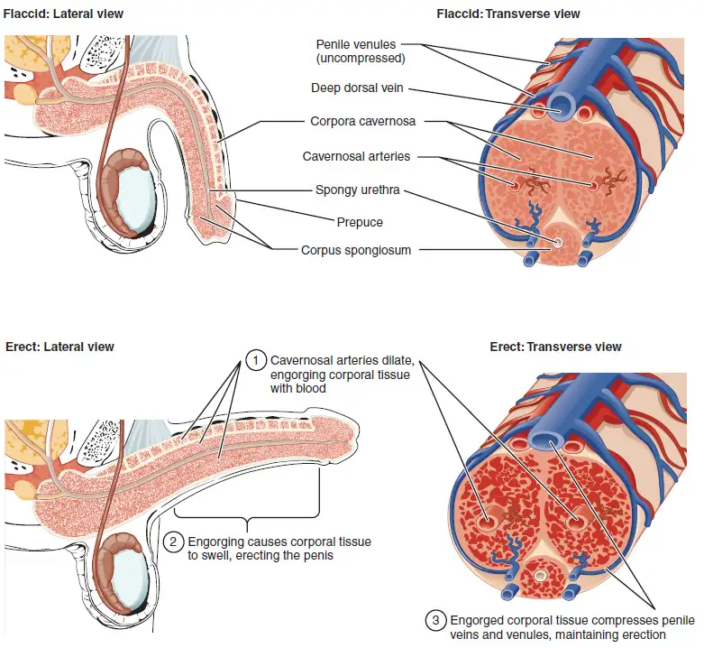
The shaft of the penis surrounds the urethra (Figure 27.7). The shaft is composed of three column-like chambers of erectile tissue that span the length of the shaft. Each of the two larger lateral chambers is called a corpus cavernosum (plural = corpora cavernosa). Together, these make up the bulk of the penis. The corpus spongiosum, which can be felt as a raised ridge on the erect penis, is a smaller chamber that surrounds the spongy, or penile, urethra. The end of the penis, called the glans penis, has a high concentration of nerve endings, resulting in very sensitive skin that influences the likelihood of ejaculation (see Figure 27.2). The skin from the shaft extends down over the glans and forms a collar called the prepuce (or foreskin). The foreskin also contains a dense concentration of nerve endings, and both lubricate and protect the sensitive skin of the glans penis. A surgical procedure called circumcision, often performed for religious or social reasons, removes the prepuce, typically within days of birth.
Both sexual arousal and REM sleep (during which dreaming occurs) can induce an erection. Penile erections are the result of vasocongestion, or engorgement of the tissues because of more arterial blood flowing into the penis than is leaving in the veins. During sexual arousal, nitric oxide (NO) is released from nerve endings near blood vessels within the corpora cavernosa and spongiosum. Release of NO activates a signaling pathway that results in relaxation of the smooth muscles that surround the penile arteries, causing them to dilate. This dilation increases the amount of blood that can enter the penis and induces the endothelial cells in the penile arterial walls to also secrete NO and perpetuate the vasodilation. The rapid increase in blood volume fills the erectile chambers, and the increased pressure of the filled chambers compresses the thin-walled penile venules, preventing venous drainage of the penis. The result of this increased blood flow to the penis and reduced blood return from the penis is erection. Depending on the flaccid dimensions of a penis, it can increase in size slightly or greatly during erection, with the average length of an erect penis measuring approximately 15 cm.
Disorders of the Male Reproductive System
Erectile dysfunction (ED) is a condition in which a person has difficulty either initiating or maintaining an erection. The combined prevalence of minimal, moderate, and complete ED is approximately 40 percent in males at age 40, and reaches nearly 70 percent by 70 years of age. In addition to aging, ED is associated with diabetes, vascular disease, psychiatric disorders, prostate disorders, the use of some drugs such as certain antidepressants, and problems with the testes resulting in low testosterone concentrations. These physical and emotional conditions can lead to interruptions in the vasodilation pathway and result in an inability to achieve an erection.
Recall that the release of NO induces relaxation of the smooth muscles that surround the penile arteries, leading to the vasodilation necessary to achieve an erection. To reverse the process of vasodilation, an enzyme called phosphodiesterase (PDE) degrades a key component of the NO signaling pathway called cGMP. There are several different forms of this enzyme, and PDE type 5 is the type of PDE found in the tissues of the penis. Scientists discovered that inhibiting PDE5 increases blood flow, and allows vasodilation of the penis to occur.
PDEs and the vasodilation signaling pathway are found in the vasculature in other parts of the body. In the 1990s, clinical trials of a PDE5 inhibitor called sildenafil were initiated to treat hypertension and angina pectoris (chest pain caused by poor blood flow through the heart). The trial showed that the drug was not effective at treating heart conditions, but many men experienced erection and priapism (erection lasting longer than 4 hours). Because of this, a clinical trial was started to investigate the ability of sildenafil to promote erections in men suffering from ED. In 1998, the FDA approved the drug, marketed as Viagra®. Since approval of the drug, sildenafil and similar PDE inhibitors now generate over a billion dollars a year in sales, and are reported to be effective in treating approximately 70 to 85 percent of cases of ED. Importantly, men with health problems—especially those with cardiac disease taking nitrates—should avoid Viagra or talk to their physician to find out if they are a candidate for the use of this drug, as deaths have been reported for at-risk users.
Testosterone¶
Testosterone, an androgen, is a steroid hormone produced by Leydig cells. The alternate term for Leydig cells, interstitial cells, reflects their location between the seminiferous tubules in the testes. In male embryos, testosterone is secreted by Leydig cells by the seventh week of development, with peak concentrations reached in the second trimester. This early release of testosterone results in the anatomical differentiation of the male sexual organs. In childhood, testosterone concentrations are low. They increase during puberty, activating characteristic physical changes and initiating spermatogenesis.
Functions of Testosterone¶
The continued presence of testosterone is necessary to keep the male reproductive system working properly, and Leydig cells produce approximately 6 to 7 mg of testosterone per day. Testicular steroidogenesis (the manufacture of androgens, including testosterone) results in testosterone concentrations that are 100 times higher in the testes than in the circulation. Maintaining these normal concentrations of testosterone promotes spermatogenesis, whereas low levels of testosterone can lead to infertility. In addition to intratesticular secretion, testosterone is also released into the systemic circulation and plays an important role in muscle development, bone growth, the development of secondary sex characteristics, and maintaining libido (sex drive) in both males and females. In females, the ovaries secrete small amounts of testosterone, although most is converted to estradiol. A small amount of testosterone is also secreted by the adrenal glands in both sexes.
Control of Testosterone¶
The regulation of testosterone concentrations throughout the body is critical for male reproductive function. The intricate interplay between the endocrine system and the reproductive system is shown in Figure 27.8.
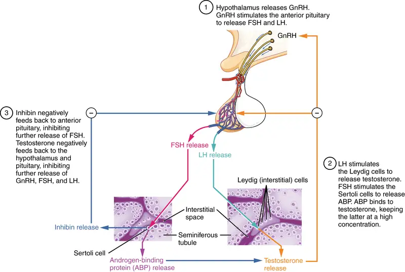
The regulation of Leydig cell production of testosterone begins outside of the testes. The hypothalamus and the pituitary gland in the brain integrate external and internal signals to control testosterone synthesis and secretion. The regulation begins in the hypothalamus. Pulsatile release of a hormone called gonadotropin-releasing hormone (GnRH) from the hypothalamus stimulates the endocrine release of hormones from the pituitary gland. Binding of GnRH to its receptors on the anterior pituitary gland stimulates release of the two gonadotropins: luteinizing hormone (LH) and follicle-stimulating hormone (FSH). These two hormones are critical for reproductive function in all humans. In the testes, FSH binds predominantly to the Sertoli cells within the seminiferous tubules to promote spermatogenesis. FSH also stimulates the Sertoli cells to produce hormones called inhibins, which function to inhibit FSH release from the pituitary, thus reducing testosterone secretion. These polypeptide hormones correlate directly with Sertoli cell function and sperm number; inhibin B can be used as a marker of spermatogenic activity. LH binds to receptors on Leydig cells in the testes and upregulates the production of testosterone.
A negative feedback loop predominantly controls the synthesis and secretion of both FSH and LH. Low blood concentrations of testosterone stimulate the hypothalamic release of GnRH. GnRH then stimulates the anterior pituitary to secrete LH into the bloodstream. In the testis, LH binds to LH receptors on Leydig cells and stimulates the release of testosterone. When concentrations of testosterone in the blood reach a critical threshold, testosterone itself will bind to androgen receptors on both the hypothalamus and the anterior pituitary, inhibiting the synthesis and secretion of GnRH and LH, respectively. When the blood concentrations of testosterone once again decline, testosterone no longer interacts with the receptors to the same degree and GnRH and LH are once again secreted, stimulating more testosterone production. This same process occurs with FSH and inhibin to control spermatogenesis.
Aging and the Male Reproductive System
Declines in Leydig cell activity can occur in males beginning at 40 to 50 years of age. The resulting reduction in circulating testosterone concentrations can lead to symptoms of andropause, also known as male menopause. While the reduction in sex steroids is akin to female menopause, there is no clear sign—such as a lack of a menstrual period—to denote the initiation of andropause. Instead, people with this condition report feelings of fatigue, reduced muscle mass, depression, anxiety, irritability, loss of libido, and insomnia. A reduction in spermatogenesis resulting in lowered fertility is also reported, and sexual dysfunction can also be associated with andropausal symptoms.
Whereas some researchers believe that certain aspects of andropause are difficult to tease apart from aging in general, testosterone replacement is sometimes prescribed to alleviate some symptoms. Recent studies have shown a benefit from androgen replacement therapy on the new onset of depression in elderly males; however, other studies caution against testosterone replacement for long-term treatment of andropause symptoms, showing that high doses can sharply increase the risk of both heart disease and prostate cancer.
27.2 Anatomy and Physiology of the Ovarian Reproductive System¶
Learning Objectives
By the end of this section, you will be able to:
- Describe the structure and function of the organs of the ovarian reproductive system
- List the steps of oogenesis
- Describe the hormonal changes that occur during the ovarian and menstrual cycles
- Trace the path of an oocyte from ovary to fertilization
The female, or ovarian, reproductive system functions to produce gametes and reproductive hormones, just like the male reproductive system; however, it also has the additional task of supporting the developing fetus and delivering it to the outside world. Unlike its male counterpart, the female reproductive system is located primarily inside the pelvic cavity (Figure 27.9). Recall that the ovaries are the female gonads. The gamete they produce is called an oocyte. We’ll discuss the production of oocytes in detail shortly. First, let’s look at some of the structures of the female reproductive system.
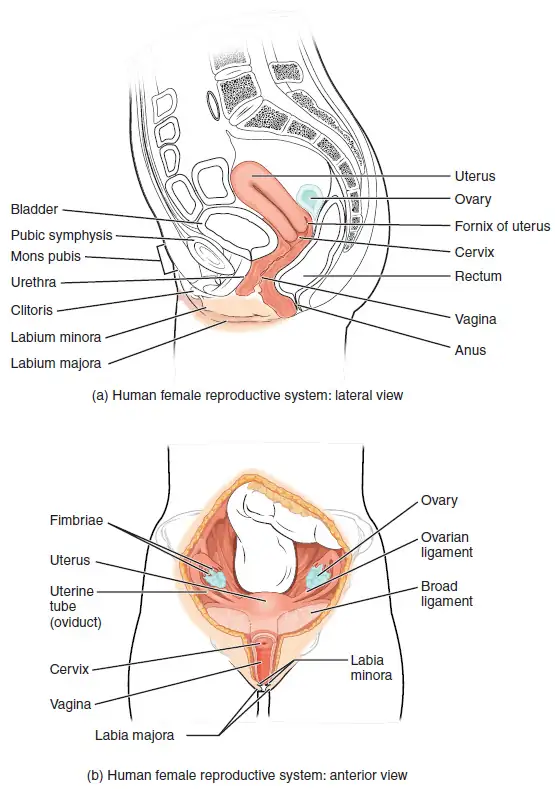
External Female Genitals¶
The external female reproductive structures are referred to collectively as the vulva (Figure 27.10). The mons pubis is a pad of fat that is located at the anterior, over the pubic bone. After puberty, it becomes covered in pubic hair. The labia majora (labia = “lips”; majora = “larger”) are folds of hair-covered skin that begin just posterior to the mons pubis. The thinner and more pigmented labia minora (labia = “lips”; minora = “smaller”) extend medial to the labia majora. Although they naturally vary in shape and size from person to person, the labia minora serve to protect the urethra and the entrance to the reproductive tract.
The superior, anterior portions of the labia minora come together to encircle the clitoris (or glans clitoris), an organ that originates from the same cells as the glans penis and has abundant nerves that make it important in sexual sensation and orgasm. The hymen is a thin membrane that sometimes partially covers the entrance to the vagina. An intact hymen cannot be used as an indication of “virginity”; even at birth, this is only a partial membrane, as menstrual fluid and other secretions must be able to exit the body, regardless of penile–vaginal intercourse. The vaginal opening is located between the opening of the urethra and the anus. It is flanked by outlets to the Bartholin’s glands (or greater vestibular glands).
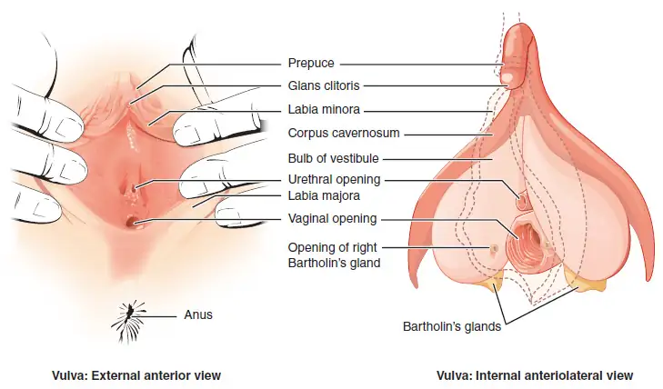
Vagina¶
The vagina, shown at the bottom of Figure 27.9 and Figure 27.10, is a muscular canal (approximately 10 cm long) that serves as the entrance to the reproductive tract. It also serves as the exit from the uterus during menses and childbirth. The outer walls of the anterior and posterior vagina are formed into longitudinal columns, or ridges, and the superior portion of the vagina—called the fornix—meets the protruding uterine cervix. The walls of the vagina are lined with an outer, fibrous adventitia; a middle layer of smooth muscle; and an inner layer of stratified squamous epithelium that rests on a lamina propria. The vaginal epithelium forms transverse folds, called rugae, which increase surface area and allow for stretching. Together, the middle and inner layers allow the expansion of the vagina to accommodate intercourse and childbirth. The thin, perforated hymen can partially surround the opening to the vaginal orifice. The hymen can be ruptured with strenuous physical exercise, penile–vaginal intercourse, and childbirth. The Bartholin’s glands and the lesser vestibular glands (located near the clitoris) secrete mucus, which keeps the vestibular area moist.
The vagina is home to a normal population of microorganisms that help to protect against infection by pathogenic bacteria, yeast, or other organisms that can enter the vagina. In a healthy person, the most predominant type of vaginal bacteria is from the genus Lactobacillus. This family of beneficial bacterial flora secretes lactic acid, and thus protects the vagina by maintaining an acidic pH (below 4.5). Potential pathogens are less likely to survive in these acidic conditions. Lactic acid, in combination with other vaginal secretions, makes the vagina a self-cleansing organ. However, douching—or washing out the vagina with fluid—can disrupt the normal balance of healthy microorganisms, and actually increase risk for infections and irritation. Indeed, the American College of Obstetricians and Gynecologists recommend that people do not douche, and that they allow the vagina to maintain its normal healthy population of protective microbial flora.
Ovaries¶
The ovaries are the female gonads (see Figure 27.9). Paired ovals, they are each about 2 to 3 cm in length, about the size of an almond. The ovaries are located within the pelvic cavity, and are supported by the mesovarium, an extension of the peritoneum that connects the ovaries to the broad ligament. Extending from the mesovarium itself is the suspensory ligament that contains the ovarian blood and lymph vessels. Finally, the ovary itself is attached to the uterus via the ovarian ligament.
The ovary comprises an outer covering of cuboidal epithelium called the ovarian surface epithelium that is superficial to a dense connective tissue covering called the tunica albuginea. Beneath the tunica albuginea is the cortex, or outer portion, of the organ. The cortex is composed of a tissue framework called the ovarian stroma that forms the bulk of the adult ovary. Oocytes develop within the outer layer of this stroma, each surrounded by supporting cells. This grouping of an oocyte and its supporting cells is called a follicle. The growth and development of ovarian follicles will be described shortly. Beneath the cortex lies the inner ovarian medulla, the site of blood vessels, lymph vessels, and the nerves of the ovary. You will learn more about the overall anatomy of the female reproductive system at the end of this section.
The Ovarian Cycle¶
The ovarian cycle is a set of predictable changes in oocytes and ovarian follicles. During the reproductive years, it is a roughly 28-day cycle that can be correlated with, but is not the same as, the menstrual cycle (discussed shortly). The cycle includes two interrelated processes: oogenesis (the production of gametes) and folliculogenesis (the growth and development of ovarian follicles).
Oogenesis¶
Gametogenesis in females is called oogenesis. The process begins with the ovarian stem cells, or oogonia (Figure 27.11). Oogonia are formed during fetal development, and divide via mitosis, much like spermatogonia in the testis. Unlike spermatogonia, however, oogonia form primary oocytes in the fetal ovary prior to birth. These primary oocytes are then arrested in this stage of meiosis I, only to resume it years later, beginning at puberty and continuing until the person is near menopause (the cessation of a female's reproductive functions). The number of primary oocytes present in the ovaries declines from one to two million in an infant, to approximately 400,000 at puberty, to zero by the end of menopause.
The initiation of ovulation—the release of an oocyte from the ovary—marks the transition from puberty into reproductive maturity. From then on, throughout a the reproductive years, ovulation occurs approximately once every 28 days. Just prior to ovulation, a surge of luteinizing hormone triggers the resumption of meiosis in a primary oocyte. This initiates the transition from primary to secondary oocyte. However, as you can see in Figure 27.11, this cell division does not result in two identical cells. Instead, the cytoplasm is divided unequally, and one daughter cell is much larger than the other. This larger cell, the secondary oocyte, eventually leaves the ovary during ovulation. The smaller cell, called the first polar body, may or may not complete meiosis and produce second polar bodies; in either case, it eventually disintegrates. Therefore, even though oogenesis produces up to four cells, only one survives.
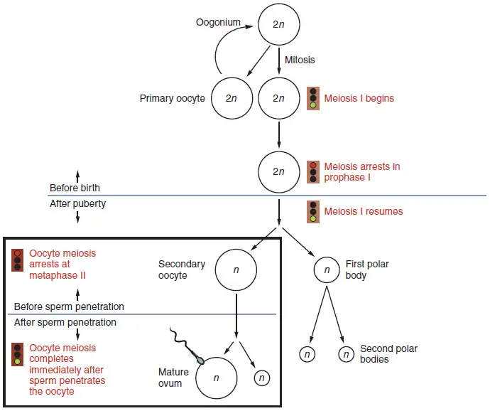
How does the diploid secondary oocyte become an ovum—the haploid female gamete? Meiosis of a secondary oocyte is completed only if a sperm succeeds in penetrating its barriers. Meiosis II then resumes, producing one haploid ovum that, at the instant of fertilization by a (haploid) sperm, becomes the first diploid cell of the new offspring (a zygote). Thus, the ovum can be thought of as a brief, transitional, haploid stage between the diploid oocyte and diploid zygote.
The larger amount of cytoplasm contained in the female gamete is used to supply the developing zygote with nutrients during the period between fertilization and implantation into the uterus. Interestingly, sperm contribute only DNA at fertilization —not cytoplasm. Therefore, the cytoplasm and all of the cytoplasmic organelles in the developing embryo are of egg-derived origin. This includes mitochondria, which contain their own DNA. Scientific research in the 1980s determined that mitochondrial DNA was maternally inherited, meaning that you can trace your mitochondrial DNA directly to your biological mother, her mother, and so on back through your female ancestors.
Everyday Connection: Mapping Human History with Mitochondrial DNA
When we talk about human DNA, we’re usually referring to nuclear DNA; that is, the DNA coiled into chromosomal bundles in the nucleus of our cells. We inherit half of our nuclear DNA from one parent, and half from the other parent. However, mitochondrial DNA (mtDNA) comes only from the mitochondria in the cytoplasm of the fat ovum we inherit from our mother. Our mother received mtDNA from their mother, who got it from their mother, and so on. Each of our cells contains approximately 1700 mitochondria, with each mitochondrion packed with mtDNA containing approximately 37 genes.
Mutations (changes) in mtDNA occur spontaneously in a somewhat organized pattern at regular intervals in human history. By analyzing these mutational relationships, researchers have been able to determine that we can all trace our ancestry back to one female who lived in Africa about 200,000 years ago. More precisely, that human is our most recent common ancestor through matrilineal descent.
This doesn’t mean that everyone’s mtDNA today looks exactly like that of our common ancestor. Because of the spontaneous mutations in mtDNA that have occurred over the centuries, researchers can map different “branches” off of the “main trunk” of our mtDNA family tree. Your mtDNA might have a pattern of mutations that aligns more closely with one branch, and your neighbor’s may align with another branch. Still, all branches eventually lead back to the common ancestor.
But what happened to the mtDNA of all of the other Homo sapiens females who were living 200,000 years ago? Researchers explain that, over the centuries, their female descendants died childless or with only male children, and thus, their maternal line—and its mtDNA—ended.
Folliculogenesis¶
Again, ovarian follicles are oocytes and their supporting cells. They grow and develop in a process called folliculogenesis, which typically leads to ovulation of one follicle approximately every 28 days, along with death to multiple other follicles. The death of ovarian follicles is called atresia, and can occur at any point during follicular development. Recall that, a female infant at birth will have one to two million oocytes within the ovarian follicles, and that this number declines throughout life until menopause, when no follicles remain. As you’ll see next, follicles progress from primordial, to primary, to secondary and tertiary stages prior to ovulation—with the oocyte inside the follicle remaining as a primary oocyte until right before ovulation.
Folliculogenesis begins with follicles in a resting state. These small primordial follicles are present in newborn females and are the prevailing follicle type in the adult ovary (Figure 27.12). Primordial follicles have only a single flat layer of support cells, called granulosa cells, that surround the oocyte, and they can stay in this resting state for years—some until right before menopause.
After puberty, a few primordial follicles will respond to a recruitment signal each day, and will join a pool of immature growing follicles called primary follicles. Primary follicles start with a single layer of granulosa cells, but the granulosa cells then become active and transition from a flat or squamous shape to a rounded, cuboidal shape as they increase in size and proliferate. As the granulosa cells divide, the follicles—now called secondary follicles (see Figure 27.12)—increase in diameter, adding a new outer layer of connective tissue, blood vessels, and theca cells—cells that work with the granulosa cells to produce estrogens.
Within the growing secondary follicle, the primary oocyte now secretes a thin acellular membrane called the zona pellucida that will play a critical role in fertilization. A thick fluid, called follicular fluid, that has formed between the granulosa cells also begins to collect into one large pool, or antrum. Follicles in which the antrum has become large and fully formed are considered tertiary follicles (or antral follicles). Several follicles reach the tertiary stage at the same time, and most of these will undergo atresia. The one that does not die will continue to grow and develop until ovulation, when it will expel its secondary oocyte surrounded by several layers of granulosa cells from the ovary. Keep in mind that most follicles don’t make it to this point. In fact, roughly 99 percent of the follicles in the ovary will undergo atresia, which can occur at any stage of folliculogenesis.
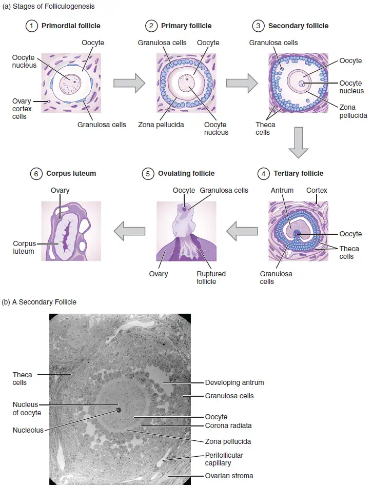
Hormonal Control of the Ovarian Cycle¶
The process of development that we have just described, from primordial follicle to early tertiary follicle, takes approximately two months in humans. The final stages of development of a small cohort of tertiary follicles, ending with ovulation of a secondary oocyte, occur over a course of approximately 28 days. These changes are regulated by many of the same hormones that regulate the male reproductive system, including GnRH, LH, and FSH.
As in males, the hypothalamus produces GnRH, a hormone that signals the anterior pituitary gland to produce the gonadotropins FSH and LH (Figure 27.13). These gonadotropins leave the pituitary and travel through the bloodstream to the ovaries, where they bind to receptors on the granulosa and theca cells of the follicles. FSH stimulates the follicles to grow (hence its name of follicle-stimulating hormone), and the five or six tertiary follicles expand in diameter. The release of LH also stimulates the granulosa and theca cells of the follicles to produce the sex steroid hormone estradiol, a type of estrogen. This phase of the ovarian cycle, when the tertiary follicles are growing and secreting estrogen, is known as the follicular phase.
The more granulosa and theca cells a follicle has (that is, the larger and more developed it is), the more estrogen it will produce in response to LH stimulation. As a result of these large follicles producing large amounts of estrogen, systemic plasma estrogen concentrations increase. Following a classic negative feedback loop, the high concentrations of estrogen will stimulate the hypothalamus and pituitary to reduce the production of GnRH, LH, and FSH. Because the large tertiary follicles require FSH to grow and survive at this point, this decline in FSH caused by negative feedback leads most of them to die (atresia). Typically only one follicle, now called the dominant follicle, will survive this reduction in FSH, and this follicle will be the one that releases an oocyte. Scientists have studied many factors that lead to a particular follicle becoming dominant: size, the number of granulosa cells, and the number of FSH receptors on those granulosa cells all contribute to a follicle becoming the one surviving dominant follicle.
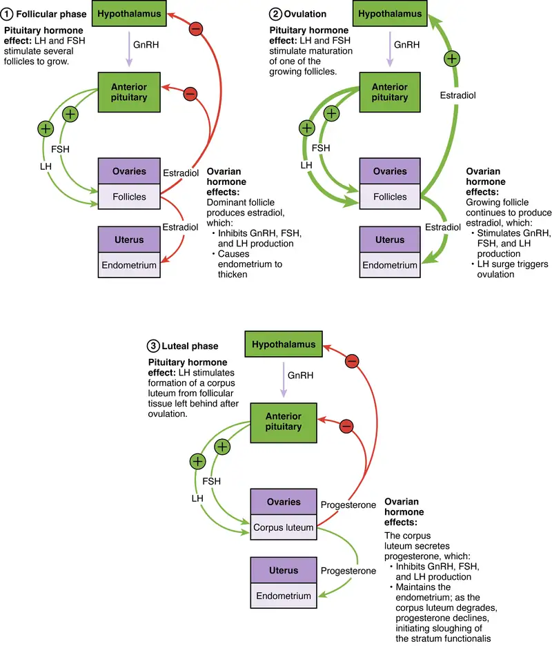
When only the one dominant follicle remains in the ovary, it again begins to secrete estrogen. It produces more estrogen than all of the developing follicles did together before the negative feedback occurred. It produces so much estrogen that the normal negative feedback doesn’t occur. Instead, these extremely high concentrations of systemic plasma estrogen trigger a regulatory switch in the anterior pituitary that responds by secreting large amounts of LH and FSH into the bloodstream (see Figure 27.13). The positive feedback loop by which more estrogen triggers release of more LH and FSH only occurs at this point in the cycle.
It is this large burst of LH (called the LH surge) that leads to ovulation of the dominant follicle. The LH surge induces many changes in the dominant follicle, including stimulating the resumption of meiosis of the primary oocyte to a secondary oocyte. As noted earlier, the polar body that results from unequal cell division simply degrades. The LH surge also triggers proteases (enzymes that cleave proteins) to break down structural proteins in the ovary wall on the surface of the bulging dominant follicle. This degradation of the wall, combined with pressure from the large, fluid-filled antrum, results in the expulsion of the oocyte surrounded by granulosa cells into the peritoneal cavity. This release is ovulation.
In the next section, you will follow the ovulated oocyte as it travels toward the uterus, but there is one more important event that occurs in the ovarian cycle. The surge of LH also stimulates a change in the granulosa and theca cells that remain in the follicle after the oocyte has been ovulated. This change is called luteinization (recall that the full name of LH is luteinizing hormone), and it transforms the collapsed follicle into a new endocrine structure called the corpus luteum, a term meaning “yellowish body” (see Figure 27.12). Instead of estrogen, the luteinized granulosa and theca cells of the corpus luteum begin to produce large amounts of the sex steroid hormone progesterone, a hormone that is critical for the establishment and maintenance of pregnancy. Progesterone triggers negative feedback at the hypothalamus and pituitary, which keeps GnRH, LH, and FSH secretions low, so no new dominant follicles develop at this time.
The post-ovulatory phase of progesterone secretion is known as the luteal phase of the ovarian cycle. If pregnancy does not occur within 10 to 12 days, the corpus luteum will stop secreting progesterone and degrade into the corpus albicans, a nonfunctional “whitish body” that will disintegrate in the ovary over a period of several months. During this time of reduced progesterone secretion, FSH and LH are once again stimulated, and the follicular phase begins again with a new cohort of early tertiary follicles beginning to grow and secrete estrogen.
The Uterine Tubes¶
The uterine tubes (also called fallopian tubes or oviducts) serve as the conduit of the oocyte from the ovary to the uterus (Figure 27.14). Each of the two uterine tubes is close to, but not directly connected to, the ovary and divided into sections. The isthmus is the narrow medial end of each uterine tube that is connected to the uterus. The wide distal infundibulum flares out with slender, finger-like projections called fimbriae. The middle region of the tube, called the ampulla, is where fertilization often occurs. The uterine tubes also have three layers: an outer serosa, a middle smooth muscle layer, and an inner mucosal layer. In addition to its mucus-secreting cells, the inner mucosa contains ciliated cells that beat in the direction of the uterus, producing a current that will be critical to move the oocyte.
Following ovulation, the secondary oocyte surrounded by a few granulosa cells is released into the peritoneal cavity. The nearby uterine tube, either left or right, receives the oocyte. Unlike sperm, oocytes lack flagella, and therefore cannot move on their own. So how do they travel into the uterine tube and toward the uterus? High concentrations of estrogen that occur around the time of ovulation induce contractions of the smooth muscle along the length of the uterine tube. These contractions occur every 4 to 8 seconds, and the result is a coordinated movement that sweeps the surface of the ovary and the pelvic cavity. Current flowing toward the uterus is generated by coordinated beating of the cilia that line the outside and lumen of the length of the uterine tube. These cilia beat more strongly in response to the high estrogen concentrations that occur around the time of ovulation. As a result of these mechanisms, the oocyte–granulosa cell complex is pulled into the interior of the tube. Once inside, the muscular contractions and beating cilia move the oocyte slowly toward the uterus. When fertilization does occur, sperm typically meet the egg while it is still moving through the ampulla.
Interactive Link
Watch this video to observe ovulation and its initiation in response to the release of FSH and LH from the pituitary gland. What specialized structures help guide the oocyte from the ovary into the uterine tube?
If the oocyte is successfully fertilized, the resulting zygote will begin to divide into two cells, then four, and so on, as it makes its way through the uterine tube and into the uterus. There, it will implant and continue to grow. If the egg is not fertilized, it will simply degrade—either in the uterine tube or in the uterus, where it may be shed with the next menstrual period.
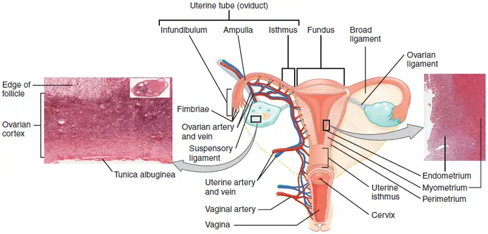
The open-ended structure of the uterine tubes can have significant health consequences if bacteria or other contagions enter through the vagina and move through the uterus, into the tubes, and then into the pelvic cavity. If this is left unchecked, a bacterial infection (sepsis) could quickly become life-threatening. The spread of an infection in this manner is of special concern when unskilled practitioners perform abortions in non-sterile conditions. Sepsis is also associated with sexually transmitted bacterial infections, especially gonorrhea and chlamydia. These increase a person's risk for pelvic inflammatory disease (PID), infection of the uterine tubes or other reproductive organs. Even when resolved, PID can leave scar tissue in the tubes, leading to infertility.
Interactive Link
Watch this video to look at the movement of the oocyte through the ovary. The cilia in the uterine tube promote movement of the oocyte. What would likely occur if the cilia were paralyzed at the time of ovulation?
The Uterus and Cervix¶
The uterus is the muscular organ that nourishes and supports the growing embryo (see Figure 27.14). Its average size is approximately 5 cm wide by 7 cm long (approximately 2 in by 3 in) when a female is not pregnant. It has three sections. The portion of the uterus superior to the opening of the uterine tubes is called the fundus. The middle section of the uterus is called the body of uterus (or corpus). The cervix is the narrow inferior portion of the uterus that projects into the vagina. The cervix produces mucus secretions that become thin and stringy under the influence of high systemic plasma estrogen concentrations, and these secretions can facilitate sperm movement through the reproductive tract.
Several ligaments maintain the position of the uterus within the abdominopelvic cavity. The broad ligament is a fold of peritoneum that serves as a primary support for the uterus, extending laterally from both sides of the uterus and attaching it to the pelvic wall. The round ligament attaches to the uterus near the uterine tubes, and extends to the labia majora. Finally, the uterosacral ligament stabilizes the uterus posteriorly by its connection from the cervix to the pelvic wall.
The wall of the uterus is made up of three layers. The most superficial layer is the serous membrane, or perimetrium, which consists of epithelial tissue that covers the exterior portion of the uterus. The middle layer, or myometrium, is a thick layer of smooth muscle responsible for uterine contractions. Most of the uterus is myometrial tissue, and the muscle fibers run horizontally, vertically, and diagonally, allowing the powerful contractions that occur during labor and the less powerful contractions (or cramps) that help to expel menstrual blood during a woman’s period. Anteriorly directed myometrial contractions also occur near the time of ovulation, and are thought to possibly facilitate the transport of sperm through the female reproductive tract.
The innermost layer of the uterus is called the endometrium. The endometrium contains a connective tissue lining, the lamina propria, which is covered by epithelial tissue that lines the lumen. Structurally, the endometrium consists of two layers: the stratum basalis and the stratum functionalis (the basal and functional layers). The stratum basalis layer is part of the lamina propria and is adjacent to the myometrium; this layer does not shed during menses. In contrast, the thicker stratum functionalis layer contains the glandular portion of the lamina propria and the endothelial tissue that lines the uterine lumen. It is the stratum functionalis that grows and thickens in response to increased levels of estrogen and progesterone. In the luteal phase of the menstrual cycle, special branches off of the uterine artery called spiral arteries supply the thickened stratum functionalis. This inner functional layer provides the proper site of implantation for the fertilized egg, and—should fertilization not occur—it is only the stratum functionalis layer of the endometrium that sheds during menstruation.
Recall that during the follicular phase of the ovarian cycle, the tertiary follicles are growing and secreting estrogen. At the same time, the stratum functionalis of the endometrium is thickening to prepare for a potential implantation. The post-ovulatory increase in progesterone, which characterizes the luteal phase, is key for maintaining a thick stratum functionalis. As long as a functional corpus luteum is present in the ovary, the endometrial lining is prepared for implantation. Indeed, if an embryo implants, signals are sent to the corpus luteum to continue secreting progesterone to maintain the endometrium, and thus maintain the pregnancy. If an embryo does not implant, no signal is sent to the corpus luteum and it degrades, ceasing progesterone production and ending the luteal phase. Without progesterone, the endometrium thins and, under the influence of prostaglandins, the spiral arteries of the endometrium constrict and rupture, preventing oxygenated blood from reaching the endometrial tissue. As a result, endometrial tissue dies and blood, pieces of the endometrial tissue, and white blood cells are shed through the vagina during menstruation, or the menses. The first menses after puberty, called menarche, can occur either before or after the first ovulation.
The Menstrual Cycle¶
Now that we have discussed the maturation of the cohort of tertiary follicles in the ovary, the build-up and then shedding of the endometrial lining in the uterus, and the function of the uterine tubes and vagina, we can put everything together to talk about the three phases of the menstrual cycle—the series of changes in which the uterine lining is shed, rebuilds, and prepares for implantation.
The timing of the menstrual cycle starts with the first day of menses, referred to as day one of a period. Cycle length is determined by counting the days between the onset of bleeding in two subsequent cycles. Because the average length of a menstrual cycle is 28 days, this is the time period used to identify the timing of events in the cycle. However, the length of the menstrual cycle varies, and even in the same person from one cycle to the next, typically from 21 to 32 days.
Just as the hormones produced by the granulosa and theca cells of the ovary “drive” the follicular and luteal phases of the ovarian cycle, they also control the three distinct phases of the menstrual cycle. These are the menses phase, the proliferative phase, and the secretory phase.
Menses Phase¶
The menses phase of the menstrual cycle is the phase during which the lining is shed; that is, the days that the person menstruates. Although it averages approximately five days, the menses phase can last from 2 to 7 days, or longer. As shown in Figure 27.15, the menses phase occurs during the early days of the follicular phase of the ovarian cycle, when progesterone, FSH, and LH levels are low. Recall that progesterone concentrations decline as a result of the degradation of the corpus luteum, marking the end of the luteal phase. This decline in progesterone triggers the shedding of the stratum functionalis of the endometrium.
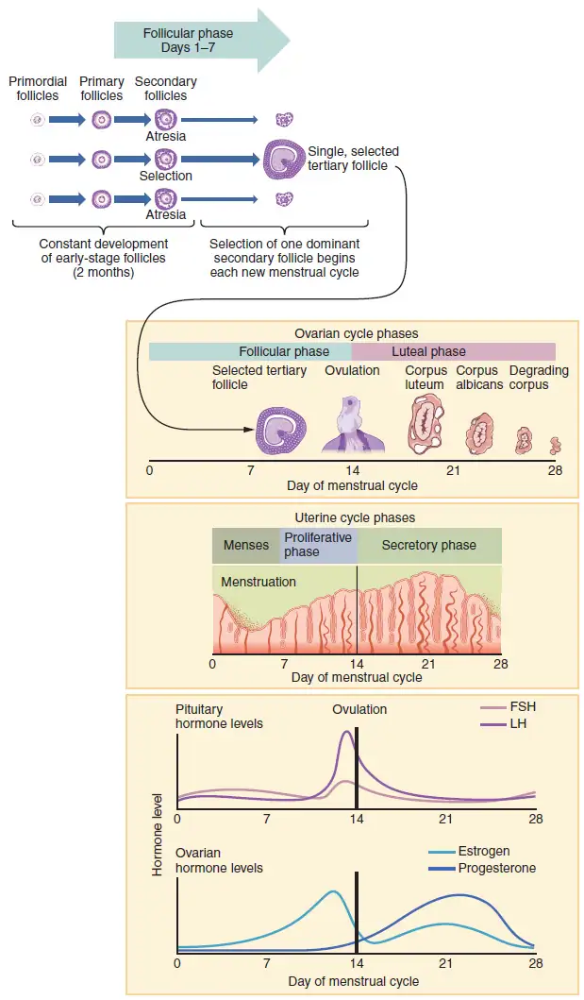
Proliferative Phase¶
Once menstrual flow ceases, the endometrium begins to proliferate again, marking the beginning of the proliferative phase of the menstrual cycle (see Figure 27.15). It occurs when the granulosa and theca cells of the tertiary follicles begin to produce increased amounts of estrogen. These rising estrogen concentrations stimulate the endometrial lining to rebuild.
Recall that the high estrogen concentrations will eventually lead to a decrease in FSH as a result of negative feedback, resulting in atresia of all but one of the developing tertiary follicles. The switch to positive feedback—which occurs with the elevated estrogen production from the dominant follicle—then stimulates the LH surge that will trigger ovulation. In a typical 28-day menstrual cycle, ovulation occurs on day 14. Ovulation marks the end of the proliferative phase as well as the end of the follicular phase.
Secretory Phase¶
In addition to prompting the LH surge, high estrogen levels increase the uterine tube contractions that facilitate the pick-up and transfer of the ovulated oocyte. High estrogen levels also slightly decrease the acidity of the vagina, making it more hospitable to sperm. In the ovary, the luteinization of the granulosa cells of the collapsed follicle forms the progesterone-producing corpus luteum, marking the beginning of the luteal phase of the ovarian cycle. In the uterus, progesterone from the corpus luteum begins the secretory phase of the menstrual cycle, in which the endometrial lining prepares for implantation (see Figure 27.15). Over the next 10 to 12 days, the endometrial glands secrete a fluid rich in glycogen. If fertilization has occurred, this fluid will nourish the ball of cells now developing from the zygote. At the same time, the spiral arteries develop to provide blood to the thickened stratum functionalis.
If no pregnancy occurs within approximately 10 to 12 days, the corpus luteum will degrade into the corpus albicans. Levels of both estrogen and progesterone will fall, and the endometrium will grow thinner. Prostaglandins will be secreted that cause constriction of the spiral arteries, reducing oxygen supply. The endometrial tissue will die, resulting in menses—or the first day of the next cycle.
Disorders of the Female Reproductive System
Research over many years has confirmed that cervical cancer is most often caused by a sexually transmitted infection with human papillomavirus (HPV). There are over 100 related viruses in the HPV family, and the characteristics of each strain determine the outcome of the infection. In all cases, the virus enters body cells and uses its own genetic material to take over the host cell’s metabolic machinery and produce more virus particles.
HPV infections are common in all people. Indeed, a recent study determined that 42.5 percent of females had HPV at the time of testing. These people ranged in age from 14 to 59 years and differed in race, ethnicity, and number of sexual partners. Of note, the prevalence of HPV infection was 53.8 percent among females aged 20 to 24 years, the age group with the highest infection rate.
HPV strains are classified as high or low risk according to their potential to cause cancer. Though most HPV infections do not cause disease, the disruption of normal cellular functions in the low-risk forms of HPV can cause the human host to develop genital warts. Often, the body is able to clear an HPV infection by normal immune responses within 2 years. However, the more serious, high-risk infection by certain types of HPV can result in cancer of the cervix (Figure 27.16). Infection with either of the cancer-causing variants HPV 16 or HPV 18 has been linked to more than 70 percent of all cervical cancer diagnoses. Although even these high-risk HPV strains can be cleared from the body over time, infections persist in some individuals. If this happens, the HPV infection can influence the cells of the cervix to develop precancerous changes.
Risk factors for cervical cancer include having unprotected sex; having multiple sexual partners; a first sexual experience at a younger age, when the cells of the cervix are not fully mature; failure to receive the HPV vaccine; a compromised immune system; and smoking. The risk of developing cervical cancer is doubled with cigarette smoking.
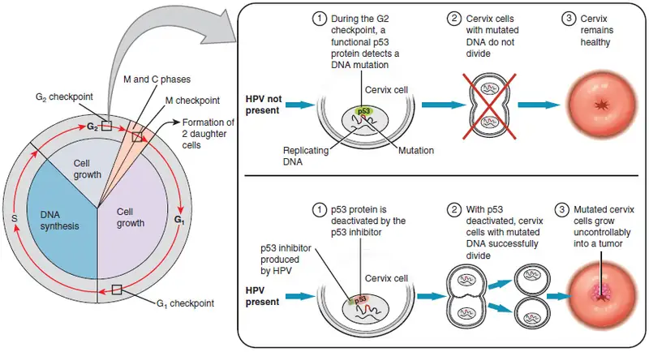
When the high-risk types of HPV enter a cell, two viral proteins are used to neutralize proteins that the host cells use as checkpoints in the cell cycle. The best studied of these proteins is p53. In a normal cell, p53 detects DNA damage in the cell’s genome and either halts the progression of the cell cycle—allowing time for DNA repair to occur—or initiates apoptosis. Both of these processes prevent the accumulation of mutations in a cell’s genome. High-risk HPV can neutralize p53, keeping the cell in a state in which fast growth is possible and impairing apoptosis, allowing mutations to accumulate in the cellular DNA.
The prevalence of cervical cancer in the United States is very low because of regular screening exams called pap smears. Pap smears sample cells of the cervix, allowing the detection of abnormal cells. If pre-cancerous cells are detected, there are several highly effective techniques that are currently in use to remove them before they pose a danger. However, people in lower-income countries often do not have access to regular pap smears. As a result, these females in lower-income countries account for as many as 80 percent of the cases of cervical cancer worldwide.
In 2006, the first vaccine against the high-risk types of HPV was approved. There are now two HPV vaccines available: Gardasil® and Cervarix®. Whereas these vaccines were initially only targeted for females, because HPV is sexually transmitted, all people require vaccination for this approach to achieve its maximum efficacy. A recent study suggests that the HPV vaccine has cut the rates of HPV infection by the four targeted strains at least in half. Unfortunately, the high cost of manufacturing the vaccine is currently limiting access to many people worldwide.
The Breasts¶
Whereas the breasts are located far from the other female reproductive organs, they are considered accessory organs of the female reproductive system. The function of the breasts is to supply milk to an infant in a process called lactation. The external features of the breast include a nipple surrounded by a pigmented areola (Figure 27.17), whose coloration may deepen during pregnancy. The areola is typically circular and can vary in size from 25 to 100 mm in diameter. The areolar region is characterized by small, raised areolar glands that secrete lubricating fluid during lactation to protect the nipple from chafing. When a baby nurses, or draws milk from the breast, the entire areolar region is taken into the mouth.
Breast milk is produced by the mammary glands, which are modified sweat glands. The milk itself exits the breast through the nipple via 15 to 20 lactiferous ducts that open on the surface of the nipple. These lactiferous ducts each extend to a lactiferous sinus that connects to a glandular lobe within the breast itself that contains groups of milk-secreting cells in clusters called alveoli (see Figure 27.17). The clusters can change in size depending on the amount of milk in the alveolar lumen. Once milk is made in the alveoli, stimulated myoepithelial cells that surround the alveoli contract to push the milk to the lactiferous sinuses. From here, the baby can draw milk through the lactiferous ducts by suckling. The lobes themselves are surrounded by fat tissue, which determines the size of the breast; breast size differs between individuals and does not affect the amount of milk produced. Supporting the breasts are multiple bands of connective tissue called suspensory ligaments that connect the breast tissue to the dermis of the overlying skin.
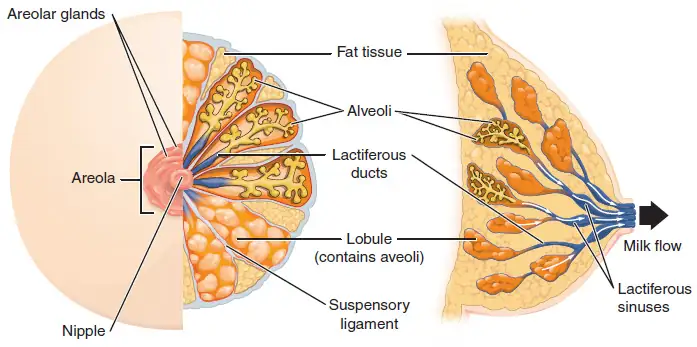
During the normal hormonal fluctuations in the menstrual cycle, breast tissue responds to changing levels of estrogen and progesterone, which can lead to swelling and breast tenderness in some individuals, especially during the secretory phase. If pregnancy occurs, the increase in hormones leads to further development of the mammary tissue and enlargement of the breasts.
Hormonal Birth Control¶
Birth control pills take advantage of the negative feedback system that regulates the ovarian and menstrual cycles to stop ovulation and prevent pregnancy. Typically they work by providing a constant level of both estrogen and progesterone, which negatively feeds back onto the hypothalamus and pituitary, thus preventing the release of FSH and LH. Without FSH, the follicles do not mature, and without the LH surge, ovulation does not occur. Although the estrogen in birth control pills does stimulate some thickening of the endometrial wall, it is reduced compared with a normal cycle and is less likely to support implantation.
Some birth control pills contain 21 active pills containing hormones, and 7 inactive pills (placebos). The decline in hormones during the week that the person takes the placebo pills triggers menses, although it is typically lighter than a normal menstrual flow because of the reduced endometrial thickening. Newer types of birth control pills have been developed that deliver low-dose estrogens and progesterone for the entire cycle (these are meant to be taken 365 days a year), and menses never occurs. While some people prefer to have the proof of a lack of pregnancy that a monthly period provides, menstruation every 28 days is not required for health reasons, and there are no reported adverse effects of not having a menstrual period in an otherwise healthy individual.
Because birth control pills function by providing constant estrogen and progesterone levels and disrupting negative feedback, skipping even just one or two pills at certain points of the cycle (or even being several hours late taking the pill) can lead to an increase in FSH and LH and result in ovulation. It is important, therefore, to follow the directions on the birth control pill package to successfully prevent pregnancy.
Aging and the Female Reproductive System
Female fertility (the ability to conceive) peaks when people are in their twenties, and is slowly reduced until 35 years of age. After that time, fertility declines more rapidly, until it ends completely at the end of menopause. Menopause is the cessation of the menstrual cycle that occurs as a result of the loss of ovarian follicles and the hormones that they produce. Menopause is considered complete if an individual has not menstruated in a full year. After that point, they are considered postmenopausal. The average age for this change is consistent worldwide at between 50 and 52 years of age, but it can normally occur at any time in a person's forties or fifties. Poor health, including smoking, can lead to earlier loss of fertility and earlier menopause.
As the age of menopause approaches, depletion of the number of viable follicles in the ovaries due to atresia affects the hormonal regulation of the menstrual cycle. During the years leading up to menopause, there is a decrease in the levels of the hormone inhibin, which normally participates in a negative feedback loop to the pituitary to control the production of FSH. The menopausal decrease in inhibin leads to an increase in FSH. The presence of FSH stimulates more follicles to grow and secrete estrogen. Because small, secondary follicles also respond to increases in FSH levels, larger numbers of follicles are stimulated to grow; however, most undergo atresia and die. Eventually, this process leads to the depletion of all follicles in the ovaries, and the production of estrogen falls off dramatically. It is primarily the lack of estrogens that leads to the symptoms of menopause.
The earliest changes occur during the menopausal transition, often referred to as peri-menopause, when a menstrual cycle becomes irregular but does not stop entirely. Although the levels of estrogen are still nearly the same as before the transition, the level of progesterone produced by the corpus luteum is reduced. This decline in progesterone can lead to abnormal growth, or hyperplasia, of the endometrium. This condition is a concern because it increases the risk of developing endometrial cancer. Two harmless conditions that can develop during the transition are uterine fibroids, which are benign masses of cells, and irregular bleeding. As estrogen levels change, other symptoms that occur are hot flashes and night sweats, trouble sleeping, vaginal dryness, mood swings, difficulty focusing, and thinning of hair on the head along with the growth of more hair on the face. Depending on the individual, these symptoms can be entirely absent, moderate, or severe.
After menopause, lower amounts of estrogens can lead to other changes. Cardiovascular disease becomes as prevalent in females as in males, possibly because estrogens reduce the amount of cholesterol in the blood vessels. When estrogen is lacking, many people find that they suddenly have problems with high cholesterol and the cardiovascular issues that accompany it. Osteoporosis is another problem because bone density decreases rapidly in the first years after menopause. The reduction in bone density leads to a higher incidence of fractures.
Hormone therapy (HT), which employs medication (synthetic estrogens and progestins) to increase estrogen and progestin levels, can alleviate some of the symptoms of menopause. In 2002, the Women’s Health Initiative began a study to observe for the long-term outcomes of hormone replacement therapy over 8.5 years. However, the study was prematurely terminated after 5.2 years because of evidence of a higher than normal risk of breast cancer in patients taking estrogen-only HT. The potential positive effects on cardiovascular disease were also not realized in the estrogen-only patients. The results of other hormone replacement studies over the last 50 years, including a 2012 study that followed over 1,000 menopausal women for 10 years, have shown cardiovascular benefits from estrogen and no increased risk for cancer. Some researchers believe that the age group tested in the 2002 trial may have been too old to benefit from the therapy, thus skewing the results. In the meantime, intense debate and study of the benefits and risks of replacement therapy is ongoing. Current guidelines approve HT for the reduction of hot flashes or flushes, but this treatment is generally only considered when people first start showing signs of menopausal changes, is used in the lowest dose possible for the shortest time possible (5 years or less), and it is suggested that people on HT have regular pelvic and breast exams.
27.3 Development of the Male and Female Reproductive Systems¶
Learning Objectives
By the end of this section, you will be able to:
- Explain how bipotential tissues are directed to develop into male or female sex organs
- Name the rudimentary duct systems in the embryo that are precursors to male or female internal sex organs
- Describe the hormonal changes that bring about puberty, and the secondary sex characteristics
The development of the reproductive systems begins soon after fertilization of the egg, with primordial gonads beginning to develop approximately one month after conception. Reproductive development continues in utero, but there is little change in the reproductive system between infancy and puberty.
Development of the Sexual Organs in the Embryo and Fetus¶
Mammalian sex determination is generally determined by X and Y chromosomes. Individuals homozygous for X (XX) are female in sex and heterozygous individuals (XY) are male. The presence of a Y chromosome triggers the development of a certain set of male characteristics and its absence results in female characteristics. Nondisjunction during meiosis can produce other combinations such as XXY, XYY, and XO which are called chromosomal intersex.
Without much chemical prompting, all fertilized eggs would develop into females. To become a male, an individual must be exposed to the cascade of factors initiated by a single gene on the male Y chromosome. This is called the SRY (Sex-determining Region of the Y chromosome). Because females do not have a Y chromosome, they do not have the SRY gene. Without a functional SRY gene, an individual will be female.
In both male and female embryos, the same group of cells has the potential to develop into either the male or female gonads; this tissue is considered bipotential. The SRY gene actively recruits other genes that begin to develop the testes, and suppresses genes that are important in female development. As part of this SRY-prompted cascade, germ cells in the bipotential gonads differentiate into spermatogonia. Without SRY, different genes are expressed, oogonia form, and primordial follicles develop in the primitive ovary.
Soon after the formation of the testis, the Leydig cells begin to secrete testosterone. Testosterone can influence tissues that are bipotential to become male reproductive structures. For example, with exposure to testosterone, cells that could become either the glans penis or the glans clitoris form the glans penis. Without testosterone, these same cells differentiate into the clitoris.
Not all tissues in the reproductive tract are bipotential. The internal reproductive structures (for example the uterus, uterine tubes, and part of the vagina in females; and the epididymis, ductus deferens, and seminal vesicles in males) form from one of two rudimentary duct systems in the embryo. For typical reproductive function in the adult, one set of these ducts must develop properly, and the other must degrade. In males, secretions from sustentacular cells trigger a degradation of the female duct, called the Müllerian duct. At the same time, testosterone secretion stimulates growth of the male tract, the Wolffian duct. Without such sustentacular cell secretion, the Müllerian duct will develop; without testosterone, the Wolffian duct will degrade. Thus, the developing offspring will be female. For more information and a figure of differentiation of the gonads, seek additional content on fetal development.
Interactive Link Feature
The different genitalia of fetuses develop from the same tissues in the embryo. View this animation to see a comparison of the development of structures of the ovarian and testicular reproductive systems in a growing fetus. Where are the testes located for most of gestational time?
Further Sexual Development Occurs at Puberty¶
Puberty is the stage of development at which individuals become sexually mature. Though the outcomes of puberty for different sexes are very different, the hormonal control of the process is very similar. In addition, though the timing of these events varies between individuals, the sequence of changes that occur is predictable for male and female adolescents. As shown in Figure 27.18, a concerted release of hormones from the hypothalamus (GnRH), the anterior pituitary (LH and FSH), and the gonads (either testosterone or estrogen) is responsible for the maturation of the reproductive systems and the development of secondary sex characteristics, which are physical changes that serve auxiliary roles in reproduction.
The first changes begin around the age of eight or nine when the production of LH becomes detectable. The release of LH occurs primarily at night during sleep and precedes the physical changes of puberty by several years. In pre-pubertal children, the sensitivity of the negative feedback system in the hypothalamus and pituitary is very high. This means that very low concentrations of androgens or estrogens will negatively feed back onto the hypothalamus and pituitary, keeping the production of GnRH, LH, and FSH low.
As an individual approaches puberty, two changes in sensitivity occur. The first is a decrease of sensitivity in the hypothalamus and pituitary to negative feedback, meaning that it takes increasingly larger concentrations of sex steroid hormones to stop the production of LH and FSH. The second change in sensitivity is an increase in sensitivity of the gonads to the FSH and LH signals, meaning the gonads of adults are more responsive to gonadotropins than are the gonads of children. As a result of these two changes, the levels of LH and FSH slowly increase and lead to the enlargement and maturation of the gonads, which in turn leads to secretion of higher levels of sex hormones and the initiation of spermatogenesis and folliculogenesis.
In addition to age, multiple factors can affect the age of onset of puberty, including genetics, environment, and psychological stress. One of the more important influences may be nutrition; historical data demonstrate the effect of better and more consistent nutrition on the age of menarche in the United States, which decreased from an average age of approximately 17 years of age in 1860 to the current age of approximately 12.75 years in 1960, as it remains today. Some studies indicate a link between puberty onset and the amount of stored fat in an individual. This effect is more pronounced in females, but has been documented in both sexes. Body fat, corresponding with secretion of the hormone leptin by adipose cells, appears to have a strong role in determining menarche. This may reflect to some extent the high metabolic costs of gestation and lactation. In females who are extremely lean and highly active, such as gymnasts, there is often a delay in the onset of puberty.
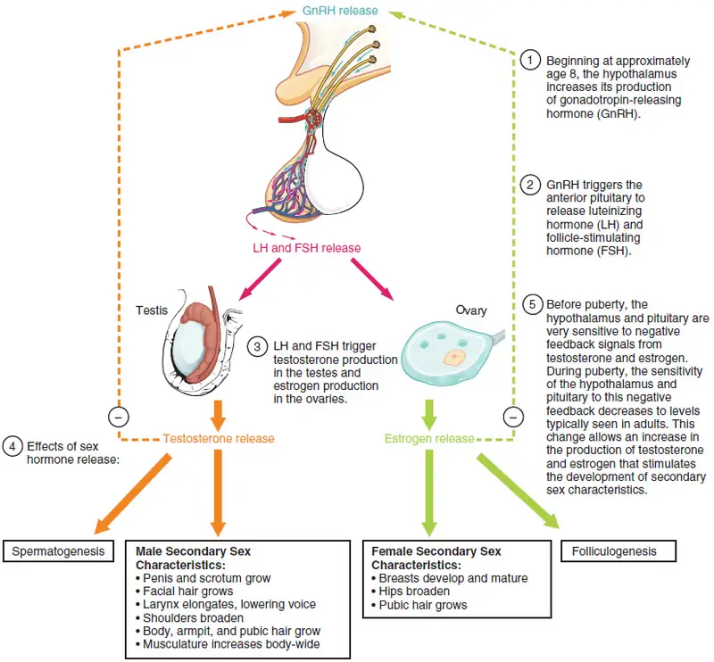
Signs of Puberty¶
Different sex steroid hormone concentrations between the sexes also contribute to the development and function of secondary sexual characteristics. Examples of secondary sexual characteristics are listed in Table 27.1.
Table 27.1
| Development of the Secondary Sexual Characteristics | |
|---|---|
| Male | Female |
| Increased larynx size and deepening of the voice | Deposition of fat, predominantly in breasts and hips |
| Increased muscular development | Breast development |
| Growth of facial, axillary, and pubic hair, and increased growth of body hair | Broadening of the pelvis and growth of axillary and pubic hair |
As a female reaches puberty, typically the first change that is visible is the development of the breast tissue. This is followed by the growth of axillary and pubic hair. A growth spurt normally starts at approximately age 9 to 11, and may last two years or more. During this time, height can increase 3 inches a year. The next step in puberty is menarche, the start of menstruation.
In males, the growth of the testes is typically the first physical sign of the beginning of puberty, which is followed by growth and pigmentation of the scrotum and growth of the penis. The next step is the growth of hair, including armpit, pubic, chest, and facial hair. Testosterone stimulates the growth of the larynx and thickening and lengthening of the vocal folds, which causes the voice to drop in pitch. The first fertile ejaculations typically appear at approximately 15 years of age, but this age can vary widely across individuals. Unlike the early growth spurt observed in females, the male growth spurt occurs toward the end of puberty, at approximately age 11 to 13, and height can increase as much as 4 inches a year. In some males, pubertal development can continue through the early 20s.
Chapter Review¶
Key Terms¶
- alveoli
- (of the breast) milk-secreting cells in the mammary gland
- ampulla
- (of the uterine tube) middle portion of the uterine tube in which fertilization often occurs
- antrum
- fluid-filled chamber that characterizes a mature tertiary (antral) follicle
- areola
- highly pigmented, circular area surrounding the raised nipple and containing areolar glands that secrete fluid important for lubrication during suckling
- Bartholin’s glands
- (also, greater vestibular glands) glands that produce a thick mucus that maintains moisture in the vulva area; also referred to as the greater vestibular glands
- blood–testis barrier
- tight junctions between Sertoli cells that prevent bloodborne pathogens from gaining access to later stages of spermatogenesis and prevent the potential for an autoimmune reaction to haploid sperm
- body of uterus
- middle section of the uterus
- broad ligament
- wide ligament that supports the uterus by attaching laterally to both sides of the uterus and pelvic wall
- bulbourethral glands
- (also, Cowper’s glands) glands that secrete a lubricating mucus that cleans and lubricates the urethra prior to and during ejaculation
- cervix
- elongate inferior end of the uterus where it connects to the vagina
- clitoris
- (also, glans clitoris) nerve-rich area of the vulva that contributes to sexual sensation during intercourse
- corpus albicans
- nonfunctional structure remaining in the ovarian stroma following structural and functional regression of the corpus luteum
- corpus cavernosum
- (plural = corpora cavernosa) either of two columns of erectile tissue in the penis that fill with blood during an erection
- corpus luteum
- transformed follicle after ovulation that secretes progesterone
- corpus spongiosum
- column of erectile tissue in the penis that fills with blood during an erection and surrounds the penile urethra on the ventral portion of the penis
- ductus deferens
- (also, vas deferens) duct that transports sperm from the epididymis through the spermatic cord and into the ejaculatory duct; also referred as the vas deferens
- ejaculatory duct
- duct that connects the ampulla of the ductus deferens with the duct of the seminal vesicle at the prostatic urethra
- endometrium
- inner lining of the uterus, part of which builds up during the secretory phase of the menstrual cycle and then sheds with menses
- epididymis
- (plural = epididymides) coiled tubular structure in which sperm start to mature and are stored until ejaculation
- fimbriae
- fingerlike projections on the distal uterine tubes
- follicle
- ovarian structure of one oocyte and surrounding granulosa (and later theca) cells
- folliculogenesis
- development of ovarian follicles from primordial to tertiary under the stimulation of gonadotropins
- fundus
- (of the uterus) domed portion of the uterus that is superior to the uterine tubes
- gamete
- haploid reproductive cell that contributes genetic material to form an offspring
- glans penis
- bulbous end of the penis that contains a large number of nerve endings
- gonadotropin-releasing hormone (GnRH)
- hormone released by the hypothalamus that regulates the production of follicle-stimulating hormone and luteinizing hormone from the pituitary gland
- gonads
- reproductive organs (testes and ovaries) that produce gametes and reproductive hormones
- granulosa cells
- supportive cells in the ovarian follicle that produce estrogen
- hymen
- membrane that covers part of the opening of the vagina
- infundibulum
- (of the uterine tube) wide, distal portion of the uterine tube terminating in fimbriae
- inguinal canal
- opening in abdominal wall that connects the testes to the abdominal cavity
- isthmus
- narrow, medial portion of the uterine tube that joins the uterus
- labia majora
- hair-covered folds of skin located behind the mons pubis
- labia minora
- thin, pigmented, hairless flaps of skin located medial and deep to the labia majora
- lactiferous ducts
- ducts that connect the mammary glands to the nipple and allow for the transport of milk
- lactiferous sinus
- area of milk collection between alveoli and lactiferous duct
- Leydig cells
- cells between the seminiferous tubules of the testes that produce testosterone; a type of interstitial cell
- mammary glands
- glands inside the breast that secrete milk
- menarche
- first menstruation in a pubertal female
- menses
- shedding of the inner portion of the endometrium out though the vagina; also referred to as menstruation
- menses phase
- phase of the menstrual cycle in which the endometrial lining is shed
- menstrual cycle
- approximately 28-day cycle of changes in the uterus consisting of a menses phase, a proliferative phase, and a secretory phase
- mons pubis
- mound of fatty tissue located at the front of the vulva
- myometrium
- smooth muscle layer of uterus that allows for uterine contractions during labor and expulsion of menstrual blood
- Müllerian duct
- duct system present in the embryo that will eventually form the internal female reproductive structures
- oocyte
- cell that results from the division of the oogonium and undergoes meiosis I at the LH surge and meiosis II at fertilization to become a haploid ovum
- oogenesis
- process by which oogonia divide by mitosis to primary oocytes, which undergo meiosis to produce the secondary oocyte and, upon fertilization, the ovum
- oogonia
- ovarian stem cells that undergo mitosis during female fetal development to form primary oocytes
- ovarian cycle
- approximately 28-day cycle of changes in the ovary consisting of a follicular phase and a luteal phase
- ovaries
- female gonads that produce oocytes and sex steroid hormones (notably estrogen and progesterone)
- ovulation
- release of a secondary oocyte and associated granulosa cells from an ovary
- ovum
- haploid female gamete resulting from completion of meiosis II at fertilization
- penis
- male organ of copulation
- perimetrium
- outer epithelial layer of uterine wall
- polar body
- smaller cell produced during the process of meiosis in oogenesis
- prepuce
- (also, foreskin) flap of skin that forms a collar around, and thus protects and lubricates, the glans penis; also referred as the foreskin
- primary follicles
- ovarian follicles with a primary oocyte and one layer of cuboidal granulosa cells
- primordial follicles
- least developed ovarian follicles that consist of a single oocyte and a single layer of flat (squamous) granulosa cells
- proliferative phase
- phase of the menstrual cycle in which the endometrium proliferates
- prostate gland
- doughnut-shaped gland at the base of the bladder surrounding the urethra and contributing fluid to semen during ejaculation
- puberty
- life stage during which a male or female adolescent becomes anatomically and physiologically capable of reproduction
- rugae
- (of the vagina) folds of skin in the vagina that allow it to stretch during intercourse and childbirth
- scrotum
- external pouch of skin and muscle that houses the testes
- secondary follicles
- ovarian follicles with a primary oocyte and multiple layers of granulosa cells
- secondary sex characteristics
- physical characteristics that are influenced by sex steroid hormones and have supporting roles in reproductive function
- secretory phase
- phase of the menstrual cycle in which the endometrium secretes a nutrient-rich fluid in preparation for implantation of an embryo
- semen
- ejaculatory fluid composed of sperm and secretions from the seminal vesicles, prostate, and bulbourethral glands
- seminal vesicle
- gland that produces seminal fluid, which contributes to semen
- seminiferous tubules
- tube structures within the testes where spermatogenesis occurs
- Sertoli cells
- cells that support germ cells through the process of spermatogenesis; a type of sustentacular cell
- sperm
- (also, spermatozoon) male gamete
- spermatic cord
- bundle of nerves and blood vessels that supplies the testes; contains ductus deferens
- spermatid
- immature sperm cells produced by meiosis II of secondary spermatocytes
- spermatocyte
- cell that results from the division of spermatogonium and undergoes meiosis I and meiosis II to form spermatids
- spermatogenesis
- formation of new sperm, occurs in the seminiferous tubules of the testes
- spermatogonia
- (singular = spermatogonium) diploid precursor cells that become sperm
- spermiogenesis
- transformation of spermatids to spermatozoa during spermatogenesis
- suspensory ligaments
- bands of connective tissue that suspend the breast onto the chest wall by attachment to the overlying dermis
- tertiary follicles
- (also, antral follicles) ovarian follicles with a primary or secondary oocyte, multiple layers of granulosa cells, and a fully formed antrum
- testes
- (singular = testis) male gonads
- theca cells
- estrogen-producing cells in a maturing ovarian follicle
- uterine tubes
- (also, fallopian tubes or oviducts) ducts that facilitate transport of an ovulated oocyte to the uterus
- uterus
- muscular hollow organ in which a fertilized egg develops into a fetus
- vagina
- tunnel-like organ that provides access to the uterus for the insertion of semen and from the uterus for the birth of a baby
- vulva
- external female genitalia
- Wolffian duct
- duct system present in the embryo that will eventually form the internal male reproductive structures
Chapter Review¶
27.1 Anatomy and Physiology of the Testicular Reproductive System¶
Gametes are the reproductive cells that combine to form offspring. Organs called gonads produce the gametes, along with the hormones that regulate human reproduction. The male gametes are called sperm. Spermatogenesis, the production of sperm, occurs within the seminiferous tubules that make up most of the testis. The scrotum is the muscular sac that holds the testes outside of the body cavity.
Spermatogenesis begins with mitotic division of spermatogonia (stem cells) to produce primary spermatocytes that undergo the two divisions of meiosis to become secondary spermatocytes, then the haploid spermatids. During spermiogenesis, spermatids are transformed into spermatozoa (formed sperm). Upon release from the seminiferous tubules, sperm are moved to the epididymis where they continue to mature. During ejaculation, sperm exit the epididymis through the ductus deferens, a duct in the spermatic cord that leaves the scrotum. The ampulla of the ductus deferens meets the seminal vesicle, a gland that contributes fructose and proteins, at the ejaculatory duct. The fluid continues through the prostatic urethra, where secretions from the prostate are added to form semen. These secretions help the sperm to travel through the urethra and into the female reproductive tract. Secretions from the bulbourethral glands protect sperm and cleanse and lubricate the penile (spongy) urethra.
The penis is the male organ of copulation. Columns of erectile tissue called the corpora cavernosa and corpus spongiosum fill with blood when sexual arousal activates vasodilatation in the blood vessels of the penis. Testosterone regulates and maintains the sex organs and sex drive, and induces the physical changes of puberty. Interplay between the testes and the endocrine system precisely control the production of testosterone with a negative feedback loop.
27.2 Anatomy and Physiology of the Ovarian Reproductive System¶
The external female genitalia are collectively called the vulva. The vagina is the pathway into and out of the uterus. The penis is inserted into the vagina to deliver sperm, and the baby exits the uterus through the vagina during childbirth.
The ovaries produce oocytes, the female gametes, in a process called oogenesis. As with spermatogenesis, meiosis produces the haploid gamete (in this case, an ovum); however, it is completed only in an oocyte that has been penetrated by a sperm. In the ovary, an oocyte surrounded by supporting cells is called a follicle. In folliculogenesis, primordial follicles develop into primary, secondary, and tertiary follicles. Early tertiary follicles with their fluid-filled antrum will be stimulated by an increase in FSH, a gonadotropin produced by the anterior pituitary, to grow in the 28-day ovarian cycle. Supporting granulosa and theca cells in the growing follicles produce estrogens, until the level of estrogen in the bloodstream is high enough that it triggers negative feedback at the hypothalamus and pituitary. This results in a reduction of FSH and LH, and most tertiary follicles in the ovary undergo atresia (they die). One follicle, usually the one with the most FSH receptors, survives this period and is now called the dominant follicle. The dominant follicle produces more estrogen, triggering positive feedback and the LH surge that will induce ovulation. Following ovulation, the granulosa cells of the empty follicle luteinize and transform into the progesterone-producing corpus luteum. The ovulated oocyte with its surrounding granulosa cells is picked up by the infundibulum of the uterine tube, and beating cilia help to transport it through the tube toward the uterus. Fertilization occurs within the uterine tube, and the final stage of meiosis is completed.
The uterus has three regions: the fundus, the body, and the cervix. It has three layers: the outer perimetrium, the muscular myometrium, and the inner endometrium. The endometrium responds to estrogen released by the follicles during the menstrual cycle and grows thicker with an increase in blood vessels in preparation for pregnancy. If the egg is not fertilized, no signal is sent to extend the life of the corpus luteum, and it degrades, stopping progesterone production. This decline in progesterone results in the sloughing of the inner portion of the endometrium in a process called menses, or menstruation.
The breasts are accessory organs that may be utilized after the birth of a child to produce milk in a process called lactation. Birth control pills provide constant levels of estrogen and progesterone to negatively feed back on the hypothalamus and pituitary, and suppress the release of FSH and LH, which inhibits ovulation and prevents pregnancy.
27.3 Development of the Male and Female Reproductive Systems¶
The reproductive systems of males and females begin to develop soon after conception. A gene on the Y chromosome called SRY is critical in stimulating a cascade of events that simultaneously stimulate testis development and repress the development of female structures. Testosterone produced by Leydig cells in the embryonic testis stimulates the development of male sexual organs. If testosterone is not present, female sexual organs will develop.
Whereas the gonads and some other reproductive tissues are considered bipotential, the tissue that forms the internal reproductive structures stems from ducts that will develop into only male (Wolffian) or female (Müllerian) structures. To be able to reproduce as an adult, one of these systems must develop properly and the other must degrade.
Further development of the reproductive systems occurs at puberty. The initiation of the changes that occur in puberty is the result of a decrease in sensitivity to negative feedback in the hypothalamus and pituitary gland, and an increase in sensitivity of the gonads to FSH and LH stimulation. These changes lead to increases in either estrogen or testosterone. The increase in sex steroid hormones leads to maturation of the gonads and other reproductive organs. The initiation of spermatogenesis begins, as well as ovulation and menstruation. Increases in sex steroid hormones also lead to the development of secondary sex characteristics.
Interactive Link Questions¶
27.1 Anatomy and Physiology of the Testicular Reproductive System¶
1. Watch this video to learn about vasectomy. As described in this video, a vasectomy is a procedure in which a small section of the ductus (vas) deferens is removed from the scrotum. This interrupts the path taken by sperm through the ductus deferens. If sperm do not exit through the vas, either because the person has had a vasectomy or has not ejaculated, in what region of the testis do they remain?
Answer
Sperm remain in the epididymis until they degenerate.
2. Watch this video to explore the structures of the male reproductive system and the path of sperm that starts in the testes and ends as the sperm leave the penis through the urethra. Where are sperm deposited after they leave the ejaculatory duct?
Answer
Sperm enter the prostate.
27.2 Anatomy and Physiology of the Ovarian Reproductive System¶
3. Watch this video to observe ovulation and its initiation in response to the release of FSH and LH from the pituitary gland. What specialized structures help guide the oocyte from the ovary into the uterine tube?
Answer
The fimbriae sweep the oocyte into the uterine tube.
4. Watch this video to look at the movement of the oocyte through the ovary. The cilia in the uterine tube promote movement of the oocyte. What would likely occur if the cilia were paralyzed at the time of ovulation?
Answer
The oocyte may not enter the tube and may enter the pelvic cavity.
27.3 Development of the Male and Female Reproductive Systems¶
5. The different genitalia of fetuses develop from the same tissues in the embryo. View this animation that compares the development of structures of the female and male reproductive systems in a growing fetus. Where are the testes located for most of gestational time?
Answer
The testes are located in the abdomen.
Review Questions¶
27.1 Anatomy and Physiology of the Testicular Reproductive System¶
6. What are male gametes called?
- ova
- sperm
- testes
- testosterone
Answer
b
7. Leydig cells ________.
- secrete testosterone
- activate the sperm flagellum
- support spermatogenesis
- secrete seminal fluid
Answer
a
8. Which hypothalamic hormone contributes to the regulation of the male reproductive system?
- luteinizing hormone
- gonadotropin-releasing hormone
- follicle-stimulating hormone
- androgens
Answer
b
9. What is the function of the epididymis?
- sperm maturation and storage
- produces the bulk of seminal fluid
- provides nitric oxide needed for erections
- spermatogenesis
Answer
a
10. Spermatogenesis takes place in the ________.
- prostate gland
- glans penis
- seminiferous tubules
- ejaculatory duct
Answer
c
27.2 Anatomy and Physiology of the Ovarian Reproductive System¶
11. What are the female gonads called?
- oocytes
- ova
- oviducts
- ovaries
Answer
d
12. When do the oogonia undergo mitosis?
- before birth
- at puberty
- at the beginning of each menstrual cycle
- during fertilization
Answer
a
13. From what structure does the corpus luteum originate?
- uterine corpus
- dominant follicle
- fallopian tube
- corpus albicans
Answer
b
14. Where does fertilization of the egg by the sperm typically occur?
- vagina
- uterus
- uterine tube
- ovary
Answer
c
15. Why do estrogen levels fall after menopause?
- The ovaries degrade.
- There are no follicles left to produce estrogen.
- The pituitary secretes a menopause-specific hormone.
- The cells of the endometrium degenerate.
Answer
b
16. The vulva includes the ________.
- lactiferous duct, rugae, and hymen
- lactiferous duct, endometrium, and bulbourethral glands
- mons pubis, endometrium, and hymen
- mons pubis, labia majora, and Bartholin’s glands
Answer
d
27.3 Development of the Male and Female Reproductive Systems¶
17. What controls whether an embryo will develop testes or ovaries?
- pituitary gland
- hypothalamus
- Y chromosome
- presence or absence of estrogen
Answer
c
18. Without SRY expression, an embryo will develop ________.
- male reproductive structures
- female reproductive structures
- no reproductive structures
- male reproductive structures 50 percent of the time and female reproductive structures 50 percent of the time
Answer
b
19. The timing of puberty can be influenced by which of the following?
- genes
- stress
- amount of body fat
- all of the above
Answer
d
Critical Thinking Questions¶
27.1 Anatomy and Physiology of the Testicular Reproductive System¶
20. Briefly explain why mature gametes carry only one set of chromosomes.
Answer
A single gamete must combine with a gamete from an individual of the opposite sex to produce a fertilized egg, which has a complete set of chromosomes and is the first cell of a new individual.
21. What special features are evident in sperm cells but not in somatic cells, and how do these specializations function?
Answer
Unlike somatic cells, sperm are haploid. They also have very little cytoplasm. They have a head with a compact nucleus covered by an acrosome filled with enzymes, and a mid-piece filled with mitochondria that power their movement. They are motile because of their tail, a structure containing a flagellum, which is specialized for movement.
22. What do each of the three male accessory glands contribute to the semen?
Answer
The three accessory glands make the following contributions to semen: the seminal vesicle contributes about 60 percent of the semen volume, with fluid that contains large amounts of fructose to power the movement of sperm; the prostate gland contributes substances critical to sperm maturation; and the bulbourethral glands contribute a thick fluid that lubricates the ends of the urethra and the vagina and helps to clean urine residues from the urethra.
23. Describe how penile erection occurs.
Answer
During sexual arousal, nitric oxide (NO) is released from nerve endings near blood vessels within the corpora cavernosa and corpus spongiosum. The release of NO activates a signaling pathway that results in relaxation of the smooth muscles that surround the penile arteries, causing them to dilate. This dilation increases the amount of blood that can enter the penis, and induces the endothelial cells in the penile arterial walls to secrete NO, perpetuating the vasodilation. The rapid increase in blood volume fills the erectile chambers, and the increased pressure of the filled chambers compresses the thin-walled penile venules, preventing venous drainage of the penis. An erection is the result of this increased blood flow to the penis and reduced blood return from the penis.
24. While anabolic steroids (synthetic testosterone) bulk up muscles, they can also affect testosterone production in the testis. Using what you know about negative feedback, describe what would happen to testosterone production in the testis if a male takes large amounts of synthetic testosterone.
Answer
Testosterone production by the body would be reduced if a male were taking anabolic steroids. This is because the hypothalamus responds to rising testosterone levels by reducing its secretion of GnRH, which would in turn reduce the anterior pituitary’s release of LH, finally reducing the manufacture of testosterone in the testes.
27.2 Anatomy and Physiology of the Ovarian Reproductive System¶
25. Follow the path of ejaculated sperm from the vagina to the oocyte. Include all structures of the female reproductive tract that the sperm must travel through to reach the egg.
Answer
The sperm must swim upward in the vagina, through the cervix, and then through the body of the uterus to one or the other of the two uterine tubes. Fertilization generally occurs in the uterine tube.
26. Identify some differences between meiosis in males and females.
Answer
Meiosis in the man results in four viable haploid sperm, whereas meiosis in the woman results in a secondary oocyte and, upon completion following fertilization by a sperm, one viable haploid ovum with abundant cytoplasm and up to three polar bodies with little cytoplasm that are destined to die.
27. Explain the hormonal regulation of the phases of the menstrual cycle.
Answer
As a result of the degradation of the corpus luteum, a decline in progesterone concentrations triggers the shedding of the endometrial lining, marking the menses phase of the menstrual cycle. Low progesterone levels also reduce the negative feedback that had been occurring at the hypothalamus and pituitary, and result in the release of GnRH and, subsequently, FSH and LH. FSH stimulates tertiary follicles to grow and granulosa and theca cells begin to produce increased amounts of estrogen. High estrogen concentrations stimulate the endometrial lining to rebuild, marking the proliferative phase of the menstrual cycle. The high estrogen concentrations will eventually lead to a decrease in FSH because of negative feedback, resulting in atresia of all but one of the developing tertiary follicles. The switch to positive feedback that occurs with elevated estrogen production from the dominant follicle stimulates the LH surge that will trigger ovulation. The luteinization of the granulosa cells of the collapsed follicle forms the progesterone-producing corpus luteum. Progesterone from the corpus luteum causes the endometrium to prepare for implantation, in part by secreting nutrient-rich fluid. This marks the secretory phase of the menstrual cycle. Finally, in a non-fertile cycle, the corpus luteum will degrade and menses will occur.
28. Endometriosis is a disease characterized by the presence of endometrial-like tissue found outside the uterus—in the uterine tubes, on the ovaries, or even in the pelvic cavity. Offer a hypothesis as to why endometriosis increases a woman’s risk of infertility.
Answer
Endometrial tissue proliferating outside of the endometrium—for example, in the uterine tubes, on the ovaries, or within the pelvic cavity—could block the passage of sperm, ovulated oocytes, or a zygote, thus reducing fertility.
27.3 Development of the Male and Female Reproductive Systems¶
29. Identify the changes in sensitivity that occur in the hypothalamus, pituitary, and gonads as a person approaches puberty. Explain how these changes lead to the increases of sex steroid hormone secretions that drive many pubertal changes.
Answer
As an individual approaches puberty, two changes in sensitivity occur. The first is a decrease of sensitivity in the hypothalamus and pituitary to negative feedback, meaning that it takes increasingly larger concentrations of sex steroid hormones to stop the production of LH and FSH. The second change in sensitivity is an increase in the sensitivity of the gonads to the FSH and LH signals, meaning that the gonads of adults are more responsive to gonadotropins than are the gonads of children. As a result of these two changes, the levels of LH and FSH slowly increase and lead to the enlargement and maturation of the gonads, which in turn leads to secretion of higher levels of sex hormones and the initiation of spermatogenesis and folliculogenesis.
30. Explain how the internal female and male reproductive structures develop from two different duct systems.
Answer
The internal reproductive structures form from one of two rudimentary duct systems in the embryo. Testosterone secretion stimulates growth of the male tract, the Wolffian duct. Secretions of sustentacular cells trigger a degradation of the female tract, the Müllerian duct. Without these stimuli, the Müllerian duct will develop and the Wolffian duct will degrade, resulting in a female embryo.
31. Explain what would occur during fetal development to an XY individual with a mutation causing a nonfunctional SRY gene.
Answer
If the SRY gene were not functional, the XY individual would be genetically a male, but would develop female reproductive structures.
Adapted from Anatomy and Physiology 2e by OpenStax, licensed under CC BY 4.0. Access the original for free at openstax.org. Changes: converted to the web reading format of The Open Book Project.